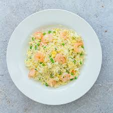

Recipe for shrimp and egg rice

Description:
Make your own shrimp egg rice by following the below recipe!
Ingredients:
- Jasmine rice
- Water
- Frozen shrimps
- 1-2 eggs
Steps:
- Add rice, water, shrimp and egg in a rice cooker.
- Set on the right setting and start the process.
- Enjoy your tasty shrimp egg rice!